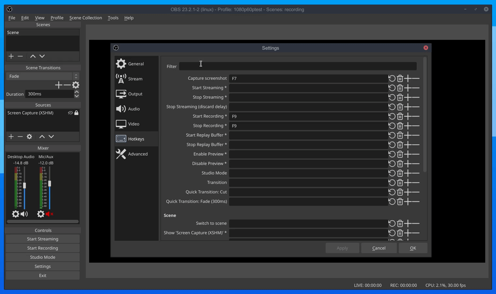

Is a plugin for obs-studio which adds a new hotkey that allows you to take a screenshot and immediately add it to obs for your viewers to see.
linux64 or win32.64 For either 64bit linux or Windows (Both architectures).Open file location)data and obs-plugins in the directory$ unzip ~/Downloads/scrab.* -d ~/Downloads/scrab$ cd ~/.config/obs-studio/$ mkdir scrabbin and data into the new folder$ mv ~/Downloads/scrab/bin ./$ mv ~/Downloads/scrab/data ./